🍽️ do cultivo ao prato
MICROVERDES
NA COZINHA
Como escolher, combinar, preparar e aproveitar seus microverdes no dia a dia
🌱 7 partes · 42 receitas · menus completos
Guia prático para cozinhar com microverdes
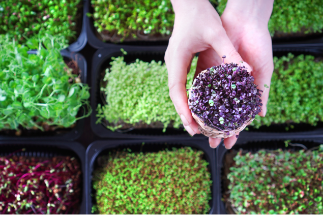
PARTE 1 — DO CULTIVO AO PRATO
Boas-vindas: seus microverdes agora vão para a mesa
Se você chegou até aqui, provavelmente já descobriu uma das coisas mais interessantes dos microverdes: eles são pequenos, mas podem mudar completamente um prato.
Depois de acompanhar uma bandeja por vários dias, observar as primeiras folhas surgirem e finalmente colher aquilo que você cultivou, vem uma pergunta muito natural: “E agora, o que eu faço com tudo isso?”
É justamente essa pergunta que este livro pretende responder. Você não precisa transformar cada refeição em um prato sofisticado. Também não precisa colocar microverdes em absolutamente tudo. A ideia é aprender a usá-los de maneira inteligente.
Objetivo: sair da lógica “vou colocar um punhado por cima” e passar para “qual microverde combina com este prato? Quanto devo usar? Em que momento devo adicioná-lo?”
Microverde não é apenas decoração
É muito fácil olhar para uma bandeja e pensar primeiro na aparência. Eles realmente deixam os pratos mais bonitos. Mas microverdes têm muito mais a oferecer:
- Dar sabor — rúcula, mostarda, rabanete (picância); coentro, manjericão (aroma); ervilha, girassol (suave).
- Acrescentar textura — crocância delicada em sanduíches, wraps e saladas.
- Equilibrar um prato — frescor e picância para pratos gordurosos ou cremosos.
- Criar contraste — quente + fresco, cremoso + crocante, neutro + cor.
- Tornar-se parte da receita — pesto, molhos, maionese, manteiga composta, chimichurri, farofa, pastas, recheios, sobremesas.
Conheça os sabores
Nem todo microverde tem o mesmo sabor. Esse é um dos primeiros conhecimentos que você deve desenvolver.
Rúcula — picante, vegetal, levemente amargo. Ovos, massas, carnes, abacate.
Mostarda — picante, intenso. Carnes, queijos, sanduíches.
Rabanete — fresco, picante. Saladas, peixes, bowls, abacate.
Ervilha — suave, doce, crocante. Saladas, frango, wraps.
Girassol — suave, amanteigado. Sanduíches, bowls, abacate.
Couve — vegetal, suave. Arroz, feijão, sopas, omeletes.
Coentro — aromático, cítrico. Feijão, carnes, peixes, molhos.
Manjericão — herbal, adocicado. Tomate, massas, risotos, pesto.
Beterraba — terroso, doce. Saladas, queijos, frutas.
Repolho roxo — suave, crocante. Wraps, sanduíches, saladas.
Amaranto — suave, delicado. Saladas, pratos frios, sobremesas.
Regra de ouro: Prato intenso/gorduroso → rúcula, mostarda, rabanete. Prato delicado → ervilha, girassol, couve. Prato aromático → coentro, manjericão. Aparência → beterraba, amaranto, repolho roxo.
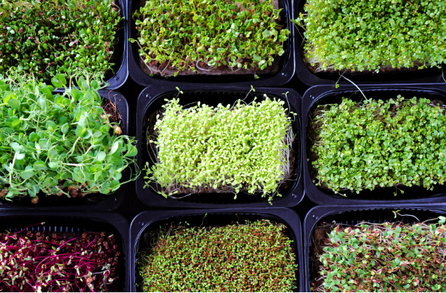
Quanto usar?
- Finalizar prato individual: 5 a 15 g
- Salada individual: 10 a 20 g
- Sanduíche/wrap: 5 a 10 g
- Prato principal: 5 a 15 g
- Pesto: 40 a 60 g
- Molho: 20 a 30 g
Regra: microverde picante pede moderação; microverde suave pode aparecer em maior quantidade.
Como lavar, secar e conservar
- Manuseie delicadamente.
- Não lave muito antes da hora (higienize próximo ao consumo).
- Seque bem (papel-toalha ou centrífuga).
- Use recipiente limpo e seco, forrado com papel-toalha.
- Refrigere (4–5 °C).
- Descarte se houver mofo, cheiro estranho, viscosidade, manchas.
5 erros que fazem o microverde perder qualidade
- Colocar muito cedo — folhas murcham. Monte próximo do consumo.
- Colocar em excesso — especialmente os picantes.
- Misturar com ingrediente muito quente — use o calor residual.
- Guardar molhado — acelera deterioração.
- Usar o mesmo microverde em tudo — aprenda o perfil de cada um.
PARTE 2 — RECEITAS PARA O DIA A DIA
CAFÉ DA MANHÃ
🍳 Ovos cremosos com rúcula
Rendimento: 1 porção | Tempo: 10 min
- 2 ovos, 1 colher de chá de manteiga, sal, pimenta, 8 g de rúcula, 1 colher de sopa de parmesão.
Modo: Bata os ovos. Aqueça manteiga em fogo baixo. Cozinhe mexendo até cremoso. Retire, adicione parmesão. Finalize com rúcula.
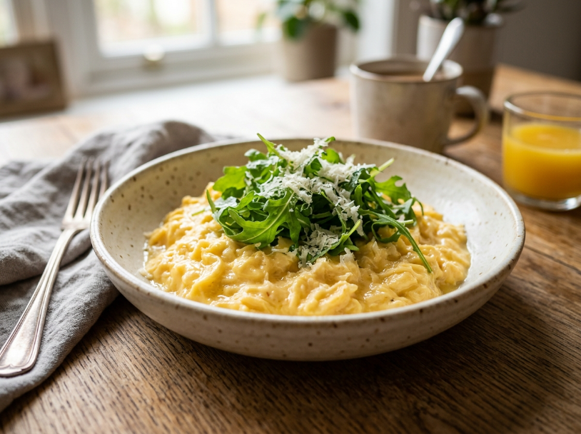
🥞 Crepioca de queijo com beterraba
- 1 ovo, 1 colher de sopa de tapioca, 1 colher de chá de linhaça, sal, 40 g de queijo minas, 10 g de beterraba.
Misture ovo, tapioca, linhaça e sal. Doure dos dois lados, recheie com queijo, finalize com beterraba.
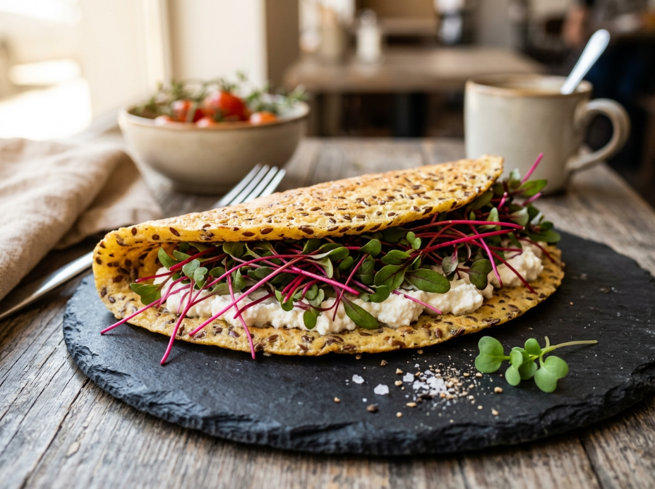
🥑 Torrada de abacate com picantes
- 1 fatia de pão, ½ abacate, suco de limão, sal, 8 g de rúcula/mostarda/rabanete, azeite.
Amasse o abacate com limão e sal. Espalhe no pão. Adicione os microverdes, azeite e pimenta.
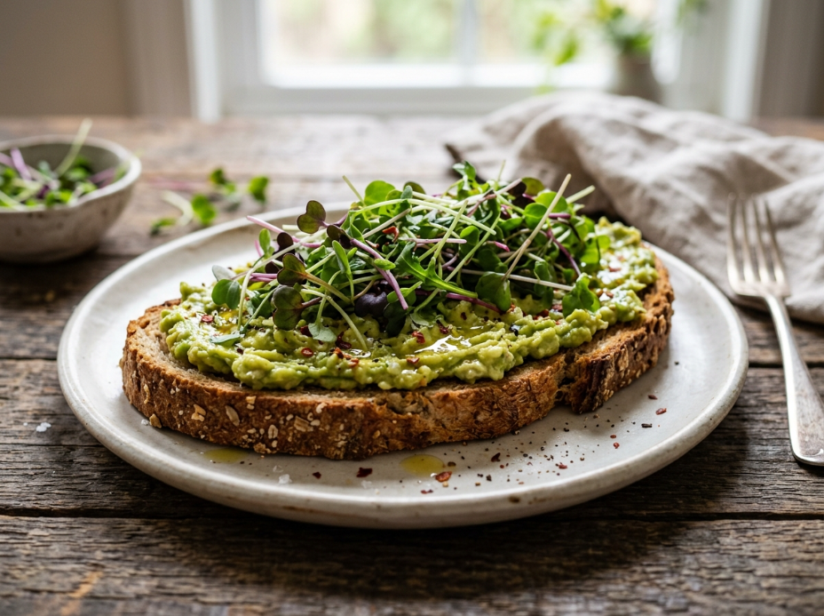
🥞 Panqueca salgada com microverdes
- 1 ovo, ½ xícara de leite, ½ xícara de farinha, ½ colher de chá de fermento, sal, cream cheese, 8 g de couve/repolho roxo.
Prepare a panqueca, espalhe cream cheese, adicione os microverdes, dobre e sirva.
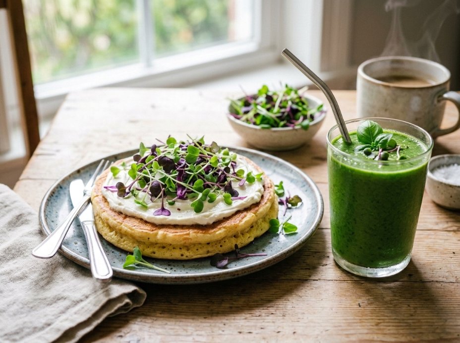
🍌 Vitamina de banana com manjericão
- 1 banana, 150 ml de leite, 1 colher de chá de mel, 8-10 g de manjericão, gelo.
Bata todos os ingredientes. Sirva imediatamente. O manjericão deve dar aroma, não dominar.
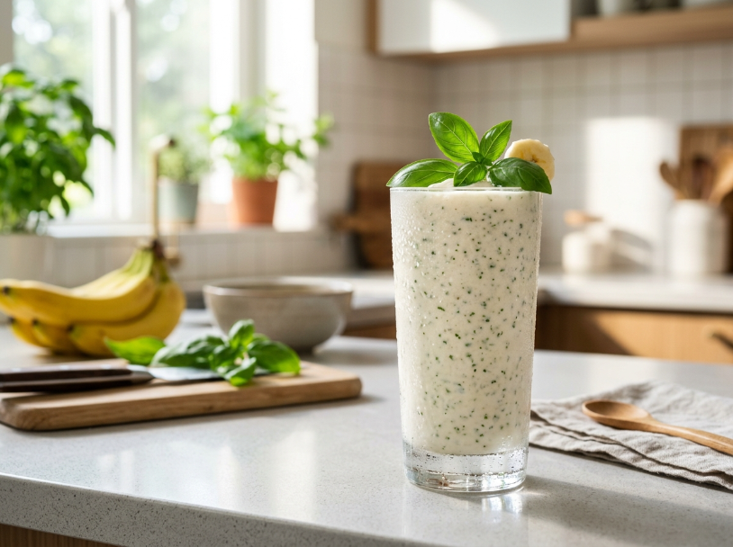
SALADAS E BOWLS
🥗 Salada de manga com rabanete
- ½ manga, 2 xícaras de folhas verdes, ½ pepino, ¼ de cebola roxa, 10 g de rabanete, suco de limão, azeite, sal.
Corte os ingredientes, misture, tempere, adicione os microverdes no final.
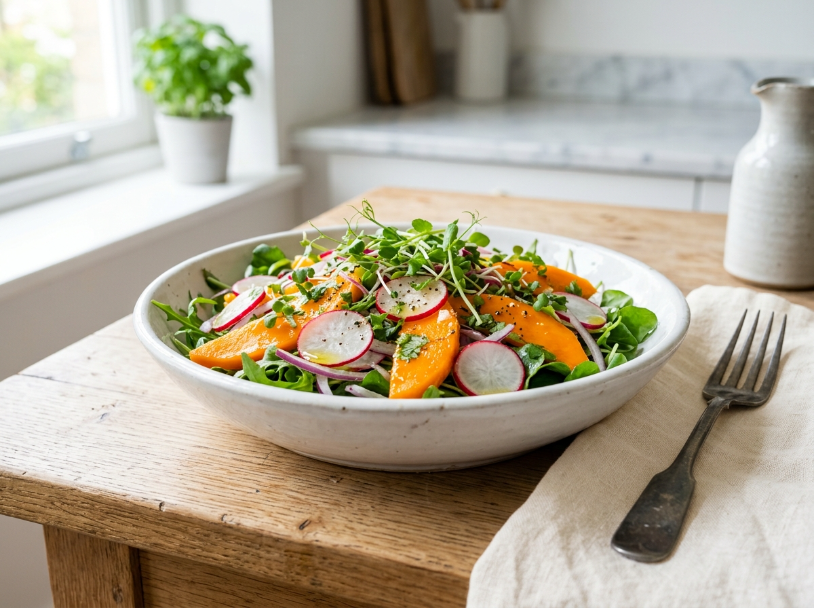
🧆 Salada de grão-de-bico com rabanete
- 1 xícara de grão-de-bico, ½ pepino, 1 tomate, ¼ de cebola, 10-15 g de rabanete, limão, azeite, cominho, sal.
Misture os ingredientes, tempere, acrescente o microverde e sirva.
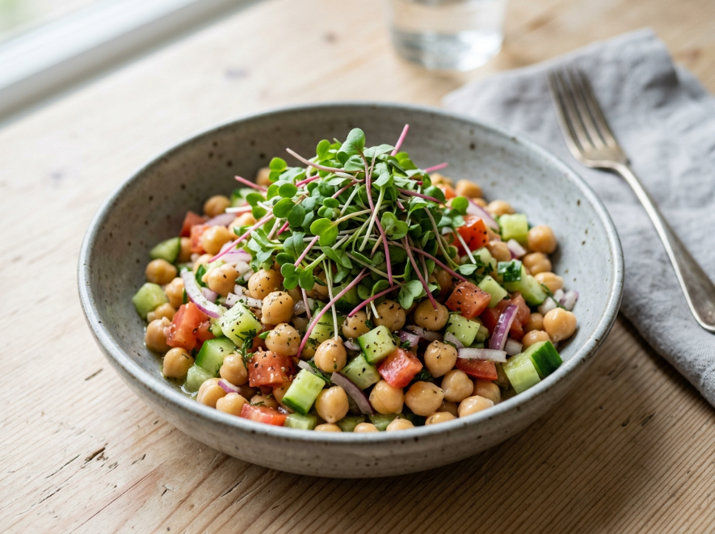
🥣 Bowl brasileiro
- 1 xícara de quinoa, ½ xícara de feijão-preto, ½ xícara de milho, ½ abacate, 1 tomate, 10 g de couve, 5 g de rabanete, 5 g de girassol, limão, azeite, sal.
Monte a base de quinoa, distribua os ingredientes, finalize com os três microverdes e tempere.
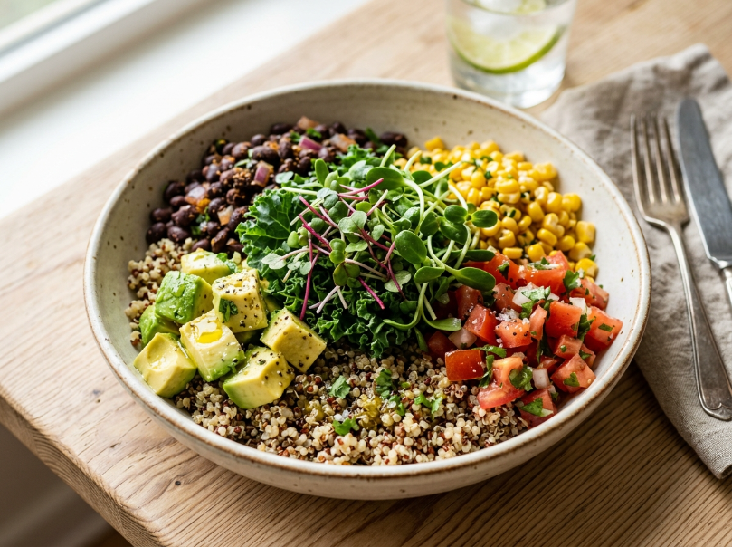
SANDUÍCHES, WRAPS E LANCHES
🥪 Sanduíche de frango cremoso
- 2 fatias de pão, 100 g de frango, 1 colher de iogurte, cenoura ralada, 8 g de couve, 5 g de repolho roxo.
Misture frango com iogurte, monte o sanduíche com cenoura e microverdes.
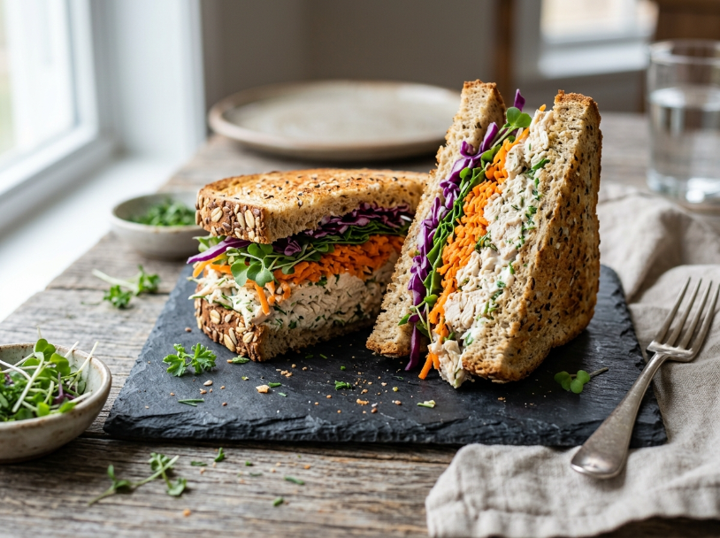
🌯 Wrap de homus e girassol
- 1 tortilha, 3 colheres de homus, vegetais, 10 g de girassol.
Espalhe homus, distribua vegetais, adicione girassol, enrole.
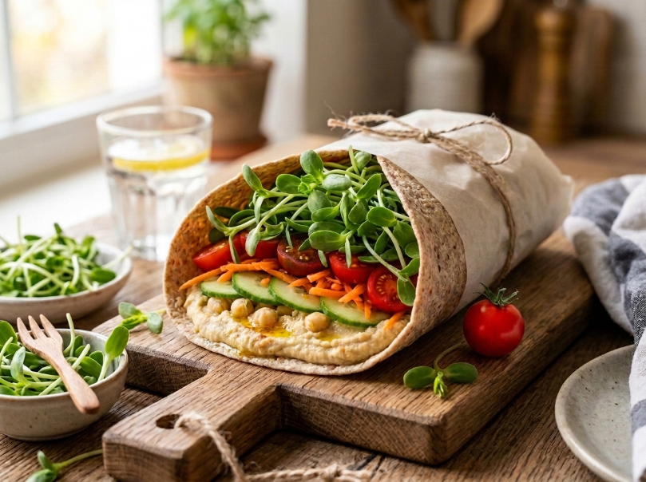
🧀 Tapioca de queijo coalho e rúcula
- 3 colheres de tapioca, 50 g de queijo coalho, 4 fatias de tomate, 8 g de rúcula/mostarda.
Prepare a tapioca, grelhe o queijo, monte com tomate e microverdes.
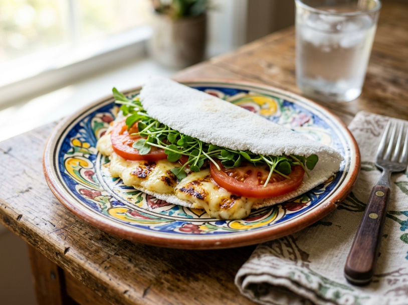
🥪 Misto quente com mostarda
- 2 fatias de pão, 2 fatias de queijo, 2 de presunto, 8 g de mostarda.
Doure o misto, abra, adicione os microverdes e feche.
ACOMPANHAMENTOS E PREPARAÇÕES BRASILEIRAS
Farofa crocante com microverdes
- 2 xícaras de farinha de mandioca, 2 colheres de manteiga, ½ cebola, 1 dente de alho, 30 g de couve/mostarda.
Refogue, adicione a farinha, doure. Desligue, espere 1 minuto, acrescente os microverdes picados.
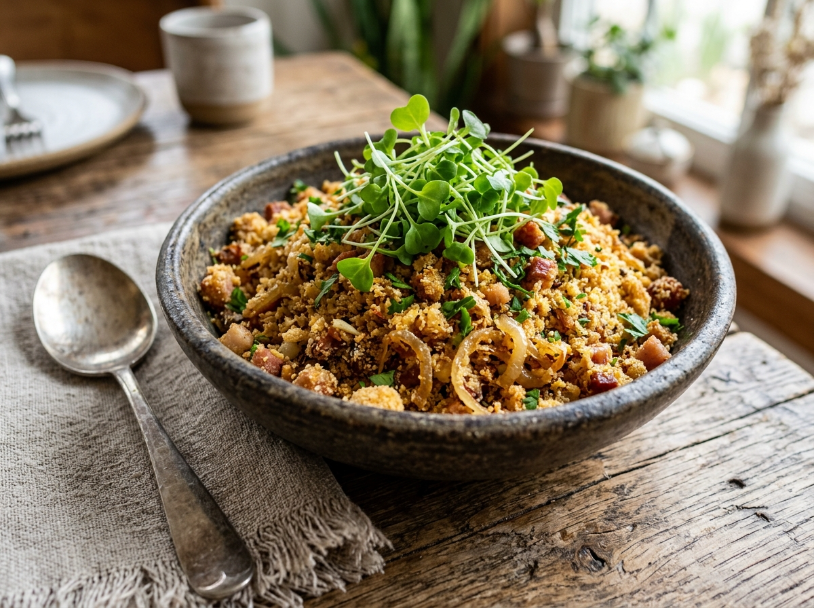
Arroz com microverde de couve
- 2 xícaras de arroz cozido, 10 g de couve, 1 colher de azeite, alho, sal.
Aqueça o arroz, desligue, acrescente azeite e misture os microverdes delicadamente.
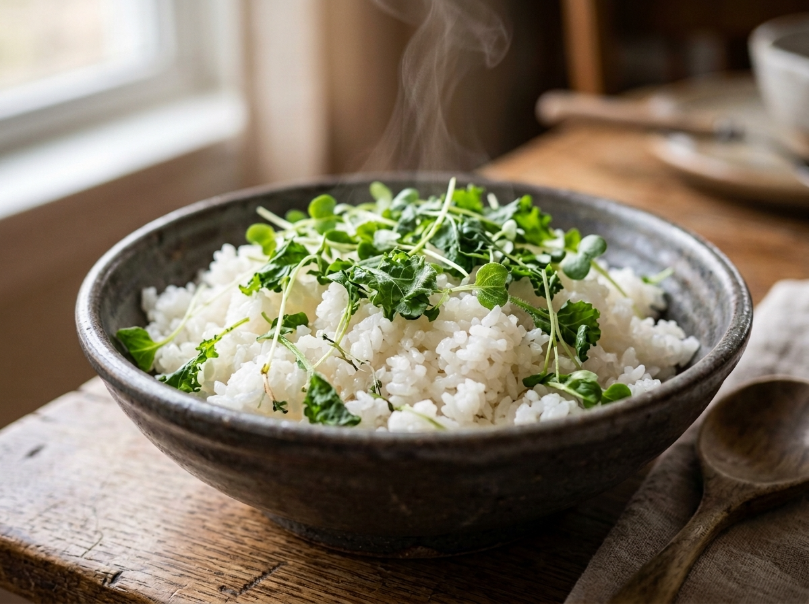
Iogurte salgado com pepino e coentro
- 1 pote de iogurte, ½ pepino, ½ dente de alho, 10 g de coentro, limão, sal, azeite.
Rale o pepino, retire o excesso de água, misture com iogurte e temperos. Finalize com coentro.
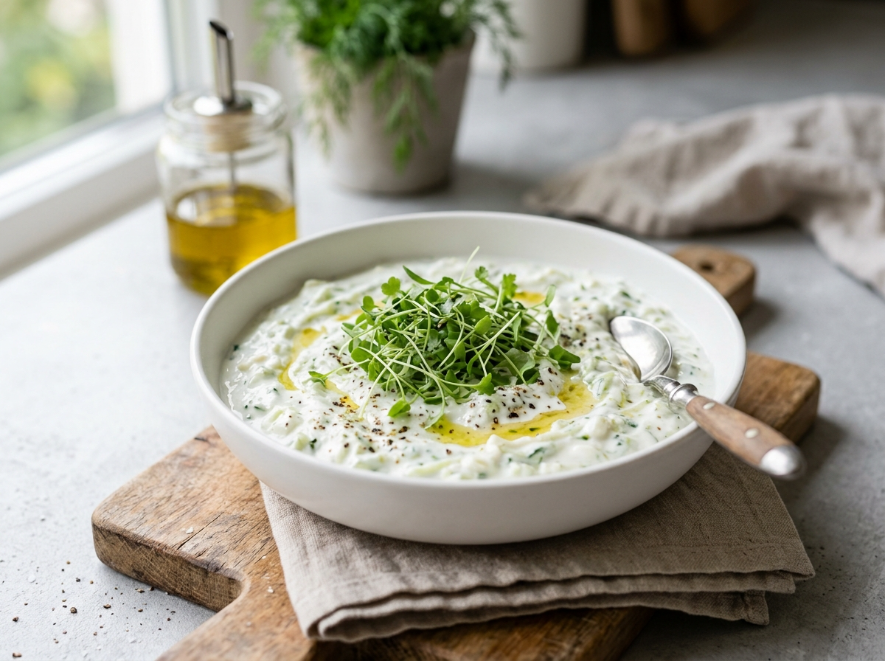
PRATOS PRINCIPAIS
🍗 Frango grelhado com ervilha
- 1 filé de frango, 15 g de ervilha, 1 colher de chá de mel, limão, azeite, alho, sal, pimenta.
Tempere o frango, grelhe. Misture mel e limão. Sirva sobre os microverdes.
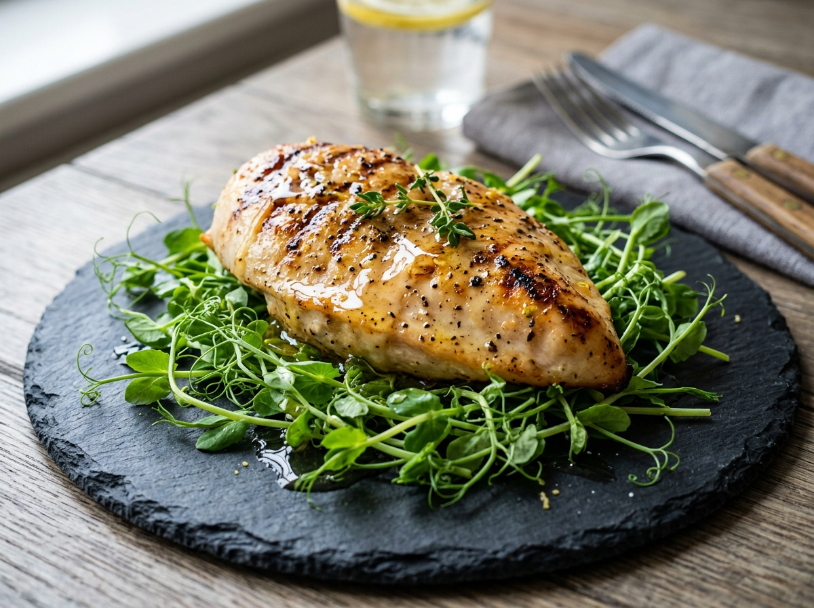
🍚 Risoto de cogumelos com manjericão
- 1 xícara de arroz arbóreo, 150 g de cogumelos, ½ cebola, 700 ml de caldo, vinho, manteiga, parmesão, 10 g de manjericão.
Refogue, adicione arroz, vinho, caldo aos poucos. Finalize com manteiga, parmesão e manjericão.
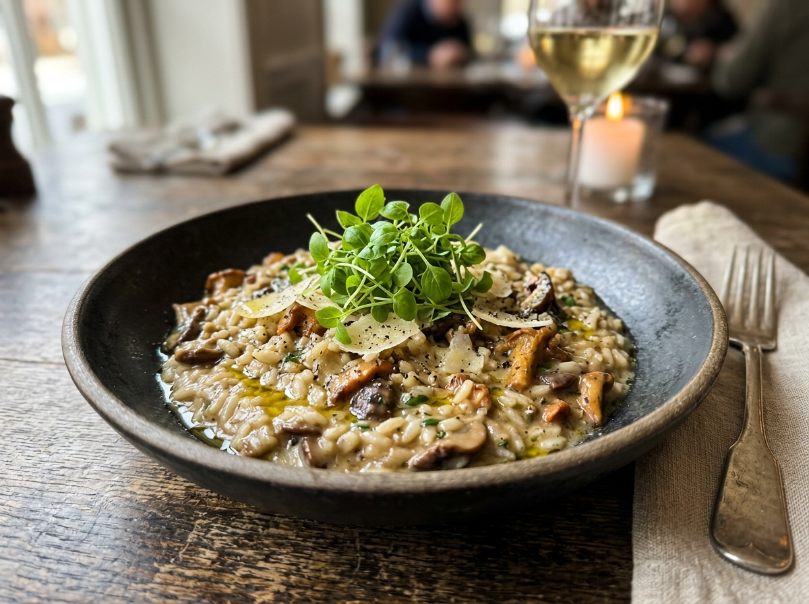
🐟 Peixe assado com rabanete
- 2 filés de peixe branco, limão, alho, sal, azeite, ervas, 10 g de rabanete.
Tempere, asse. Finalize com os microverdes.
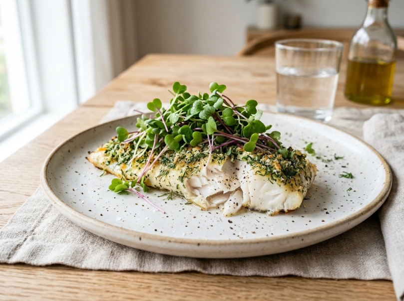
🥘 Escondidinho de carne-seca com coentro
- 300 g de carne-seca, 500 g de mandioca, 2 colheres de manteiga, leite, cebola, 10 g de coentro.
Prepare o purê, refogue a carne, monte o escondidinho. Finalize com coentro.
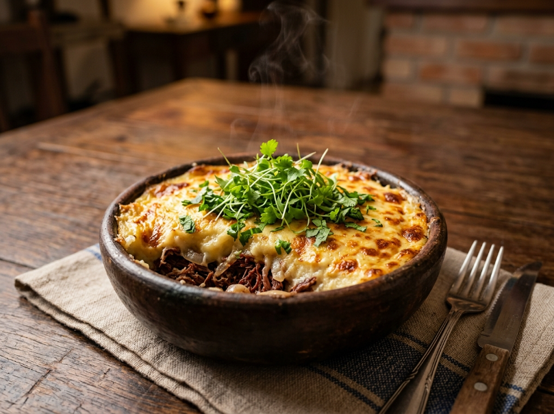
SOPAS E CALDOS
🥣 Creme de abóbora com rabanete
- 500 g de abóbora, ½ cebola, 1 dente de alho, caldo, 10 g de rabanete, sementes, azeite.
Cozinhe, bata, sirva com microverdes e sementes.
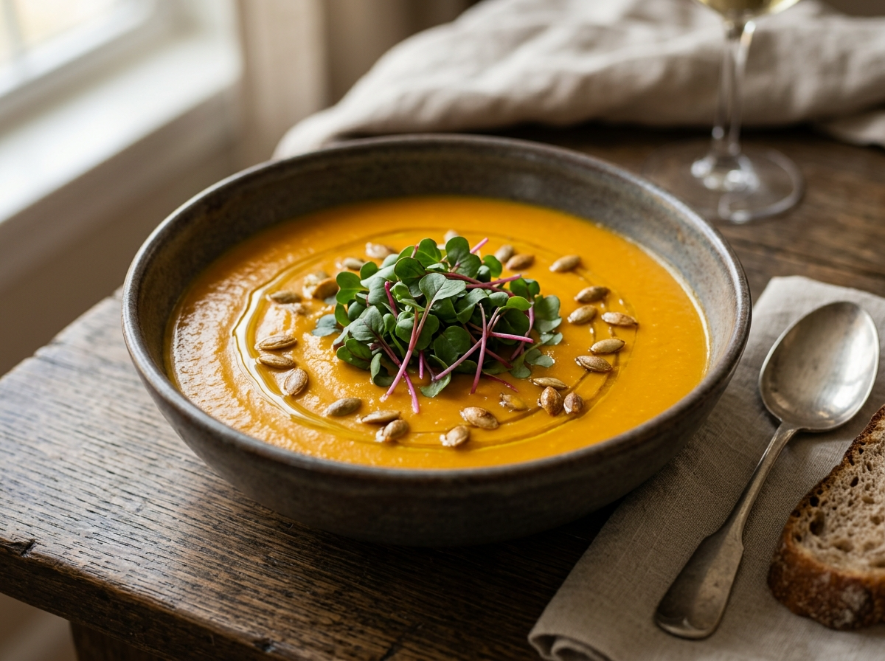
🍲 Canja com microverdes de couve
- 300 g de frango, ½ xícara de arroz, cenoura, cebola, alho, caldo, 10 g de couve.
Prepare a canja, sirva com os microverdes sobre o caldo quente.
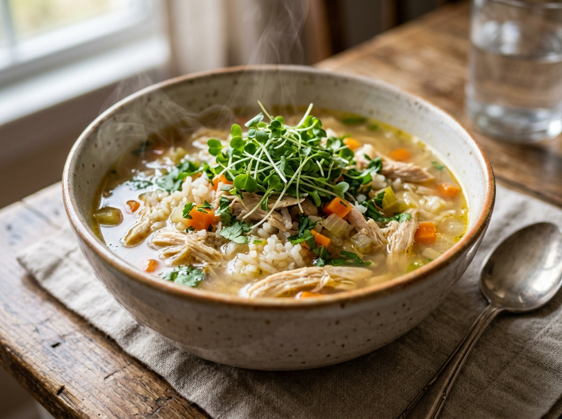
Feijoada com finalização de coentro
Sirva a feijoada e acrescente pequena quantidade de coentro sobre cada porção para contraste fresco.
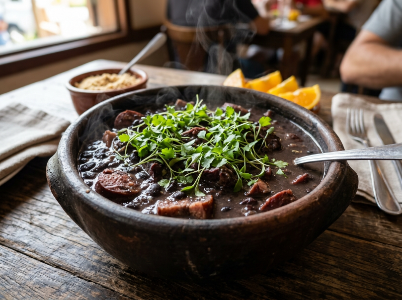
FESTAS E OCASIÕES ESPECIAIS
Canapés coloridos
- Baguete, cream cheese, beterraba, amaranto, repolho roxo, azeite, sal.
Torre o pão, espalhe cream cheese, finalize com os microverdes.
Bruschetta de tomate e manjericão
- Pão italiano, tomate, alho, azeite, sal, 10 g de manjericão.
Torre o pão, esfregue alho, coloque tomate, finalize com manjericão.
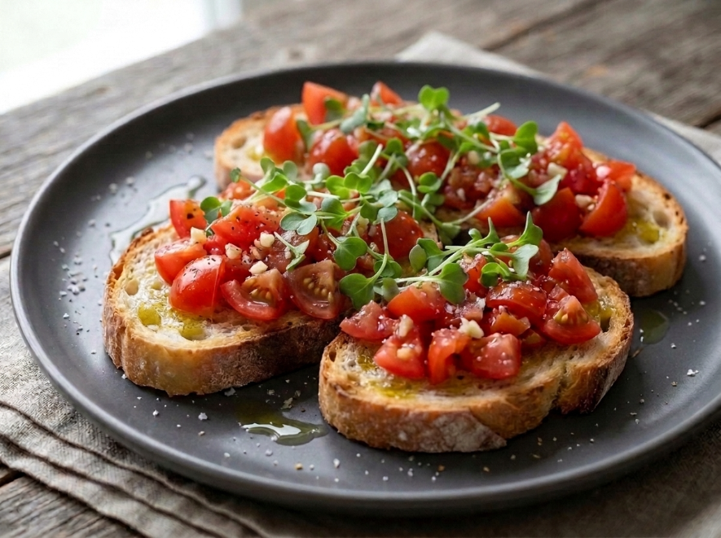
Torta salgada com jardim de microverdes
Prepare a torta de sua preferência. Depois de assada, cubra com pequenos grupos de microverdes coloridos.
PARTE 3 — QUANDO O MICROVERDE VIRA INGREDIENTE
🌿 Pesto de rúcula e manjericão
- 40-60 g de microverdes, ½ xícara de azeite, 2 colheres de castanhas, 2 colheres de parmesão, 1 dente de alho, sal.
Processe todos os ingredientes até a textura desejada. Armazene refrigerado ou congele.
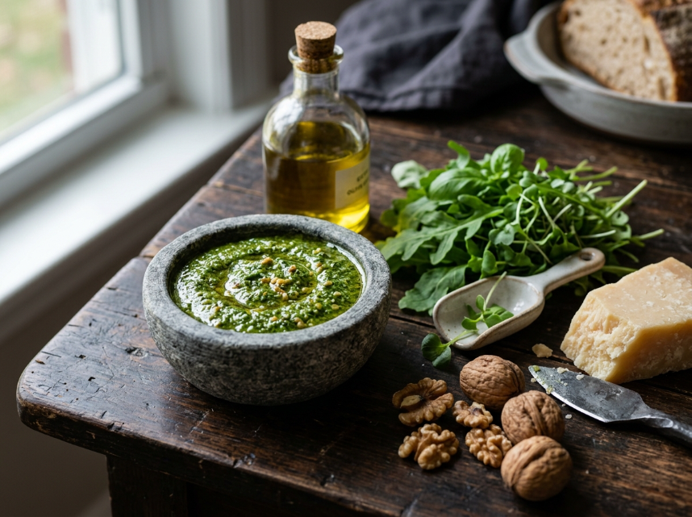
🥣 Molho verde de coentro
- 25 g de coentro, ½ xícara de iogurte, suco de 1 limão, 1 colher de azeite, sal, pimenta.
Bata todos os ingredientes. Ajuste textura e tempero. Sirva refrigerado.
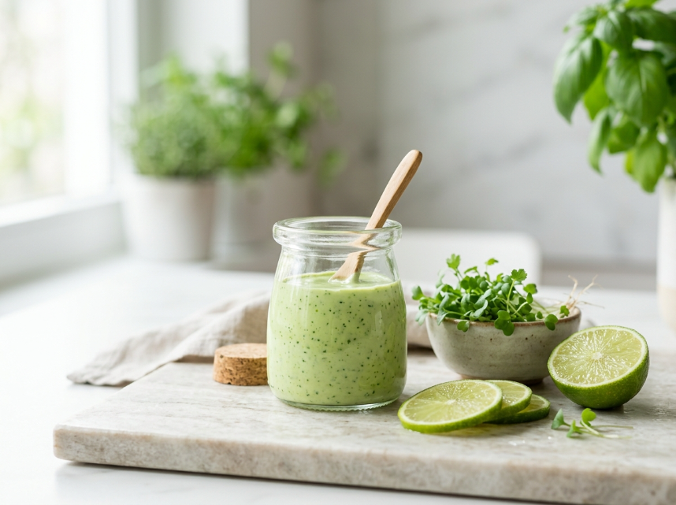
🥄 Maionese de microverdes
- ½ xícara de maionese, 20 g de rúcula, 10 g de coentro, suco de limão, ½ dente de alho.
Processe rapidamente. Use em hambúrgueres, sanduíches, batatas.
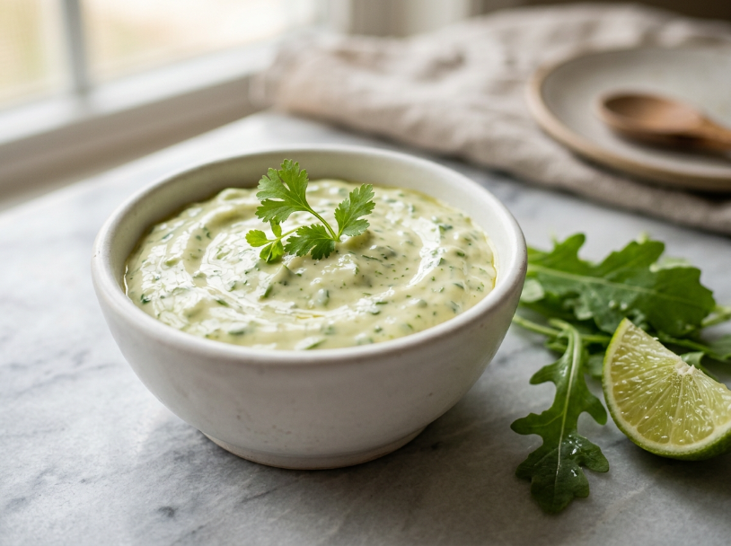
🔥 Chimichurri de microverdes
- 25 g de rúcula, 15 g de coentro, ½ xícara de azeite, 2 colheres de vinagre, 1 dente de alho, orégano, sal, pimenta.
Pique os microverdes, misture com os demais ingredientes, deixe descansar 20-30 min.
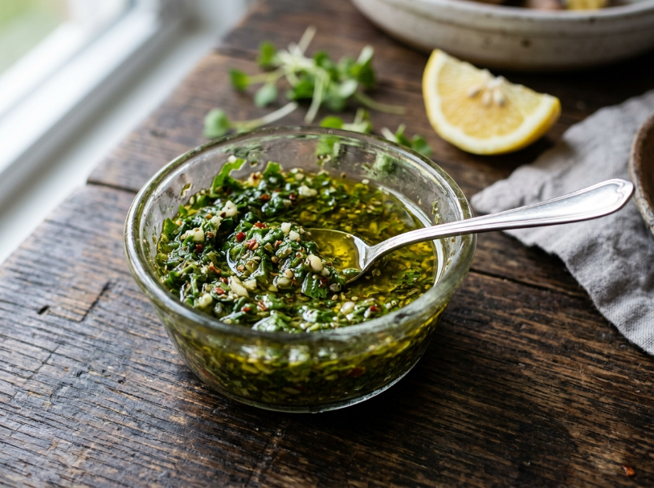
🧈 Manteiga composta de mostarda
- 100 g de manteiga, 15 g de mostarda, raspas de limão, sal.
Misture, enrole em papel-filme, refrigere. Use em carnes, pão, legumes.
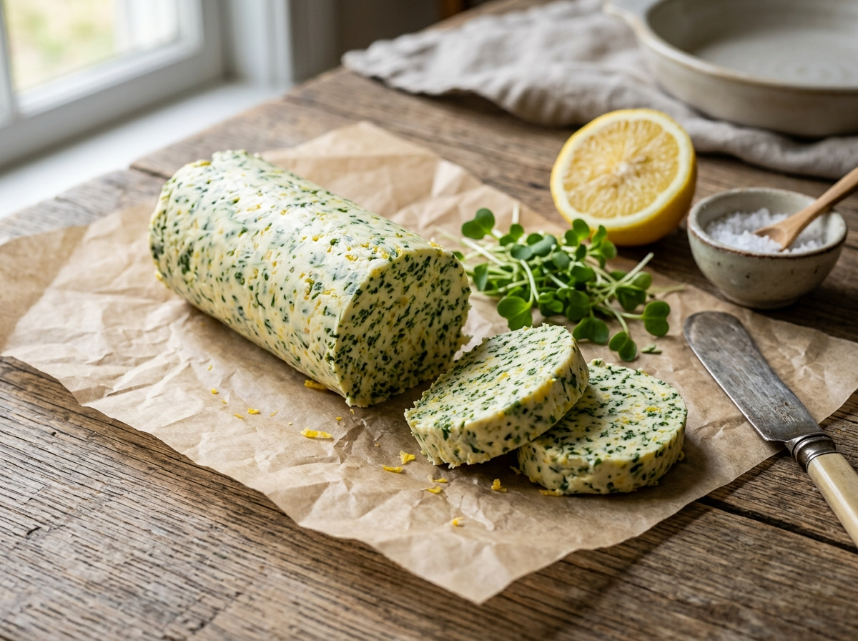
🫒 Azeite aromatizado
- ½ xícara de azeite, 15 g de manjericão/coentro, raspas de limão.
Misture e mantenha refrigerado. Use em curto prazo.
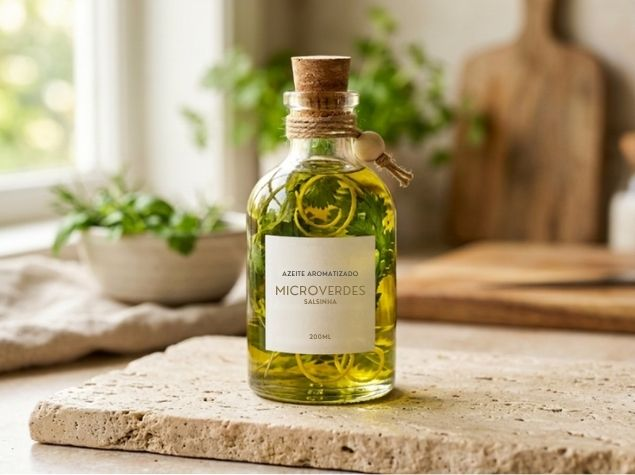
Farofa de microverdes
Use couve, mostarda, rúcula ou coentro. Prepare a farofa normalmente e acrescente os microverdes no final, fora do fogo.
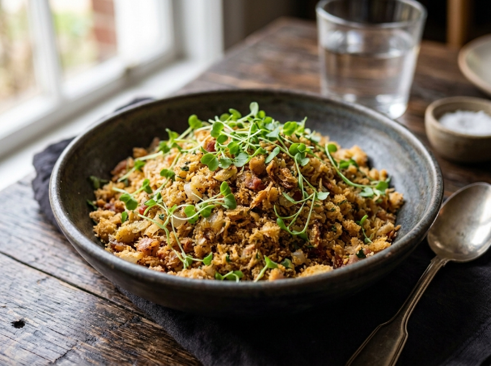
🧀 Pasta cremosa de microverdes
- ½ xícara de cream cheese, 20 g de rúcula, 10 g de ervilha, limão, sal, pimenta, azeite.
Misture todos os ingredientes. Use em torradas, sanduíches, wraps.
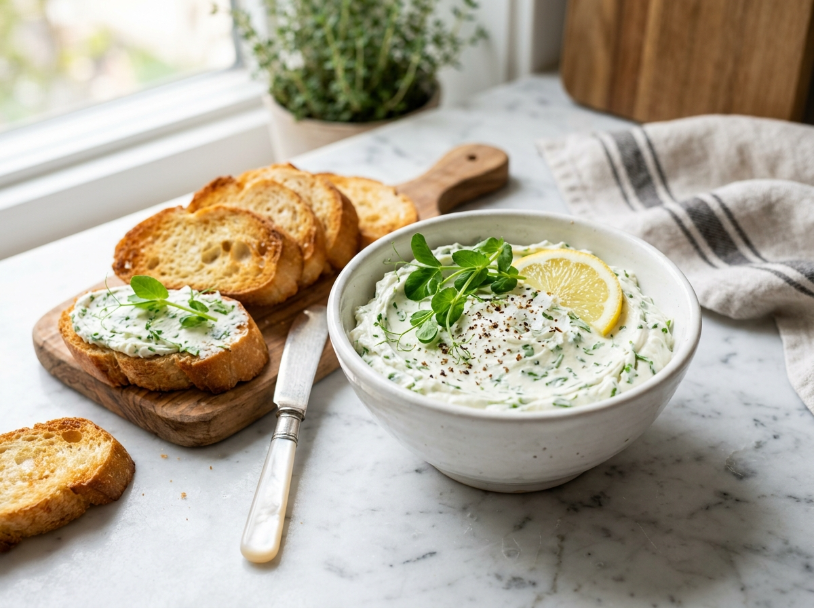
Colheu demais. E agora?
- Consumo fresco — use primeiro os mais delicados.
- Preparações — pesto, molho, maionese, pasta, chimichurri.
- Congelamento — pesto e algumas manteigas compostas podem ser congeladas.
- Compartilhamento — presenteie uma parte da colheita.
PARTE 4 — MICROVERDES TAMBÉM PODEM ENTRAR NO DOCE
🍓 Iogurte com frutas, mel e microverdes
- Iogurte, morangos, mirtilos, mel, castanhas, 3-5 g de beterraba/amaranto.
Monte em taça, finalize com os microverdes.
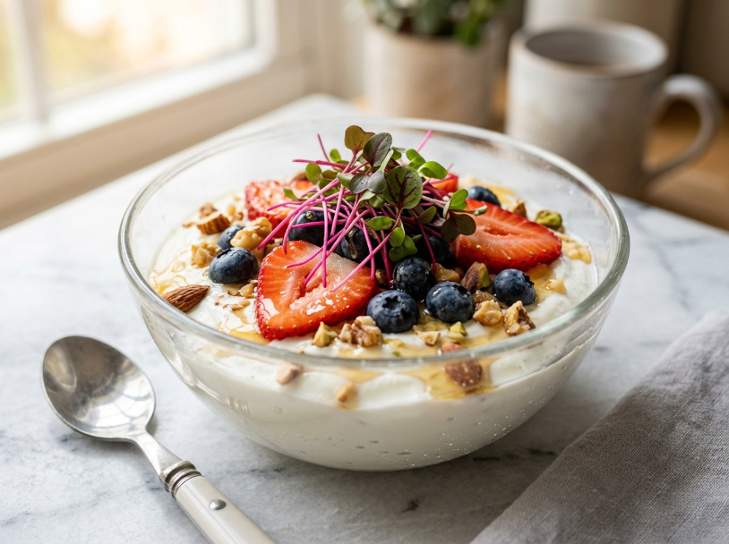
🍧 Creme de frutas vermelhas com beterraba
- 1 banana congelada, ½ xícara de frutas vermelhas, ½ pote de iogurte, 5 g de beterraba, mel opcional.
Bata todos os ingredientes. Sirva gelado.
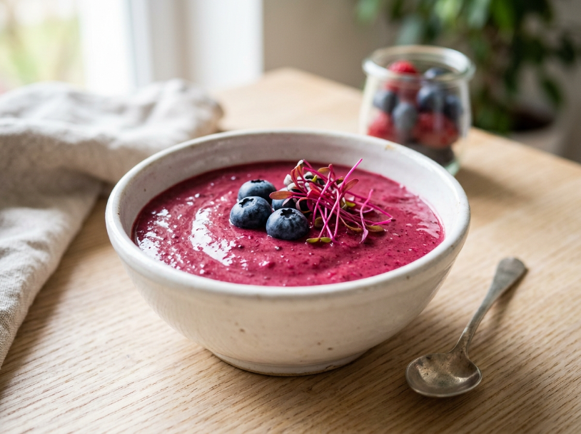
🧁 Cheesecake no copinho com microverdes coloridos
- Base: biscoito + manteiga. Creme: cream cheese, iogurte, mel, baunilha. Finalize com frutas e 3-5 g de amaranto/beterraba.
Monte os copos, refrigere, finalize.
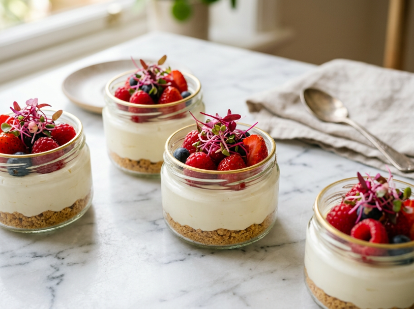
🥣 Smoothie bowl de frutas
- 1 banana congelada, ½ xícara de morango, 2 colheres de iogurte, granola, frutas frescas, 3-5 g de amaranto/beterraba.
Bata, coloque na tigela, decore com granola, frutas e microverdes.
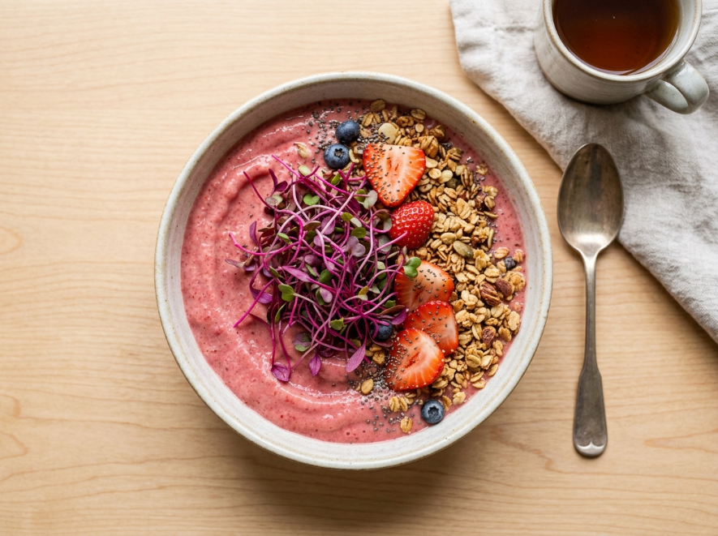
PARTE 5 — SABOR, NUTRIÇÃO E SEGURANÇA
O que os microverdes oferecem nutricionalmente?
Microverdes são interessantes não apenas pela aparência e sabor. Estudos mostram quantidades relevantes de vitaminas, carotenoides e outros compostos bioativos. Porém, não existe um único “perfil nutricional” — cada espécie é diferente. Os valores variam conforme espécie, cultivar, substrato, luz, temperatura, idade, condições de cultivo, colheita e armazenamento.
Importante: um estudo clássico de 2012 analisou 25 tipos e encontrou grande variação. Pesquisas posteriores confirmam que a composição muda de acordo com a espécie e estágio. Microverdes podem ser nutricionalmente interessantes, mas não existe regra de que todo microverde terá mais de todos os nutrientes do que a planta adulta.
E o famoso “X vezes mais nutrientes”?
Frases como “40 vezes mais nutrientes” precisam ser tratadas com cuidado. O número depende do nutriente, espécie, variedade, estudo, estágio da planta adulta, e como a comparação foi feita. Uma forma mais responsável de comunicar: “Pesquisas mostram que determinadas espécies de microverdes podem apresentar concentrações elevadas de vitaminas, carotenoides e outros compostos bioativos, mas os valores variam bastante conforme a espécie e as condições de cultivo.”
Como preservar sabor, textura e compostos sensíveis
Três palavras: fresco, delicado e rápido. Quanto menos processamento, melhor.
- Saladas: cru.
- Sanduíches: cru, próximo do consumo.
- Pratos quentes: no final.
- Molhos: processe rapidamente.
- Pesto: pequenas quantidades, armazene adequadamente.
- Congelamento: prefira preparações onde a textura original não seja o objetivo.
Segurança alimentar
- Use sementes adequadas para alimentos.
- Mantenha o cultivo limpo, evite contaminação cruzada.
- Use água adequada, lave as mãos, higienize utensílios.
- Não consuma microverdes com mofo, cheiro estranho, viscosidade, deterioração, manchas.
- Na dúvida: não consuma.
PARTE 7 — CONSULTA RÁPIDA
Tenho este microverde. O que faço?
Rúcula — ovos, pizza, massa, sanduíche, pesto, carne, abacate.
Mostarda — hambúrguer, queijo, carne, misto quente, manteiga, farofa.
Rabanete — salada, peixe, grão-de-bico, abacate, sopa de abóbora, bowl.
Ervilha — salada, frango, wrap, bowl, sanduíche.
Girassol — wrap, sanduíche, salada, bowl, frango.
Couve — arroz, feijão, farofa, sopa, omelete.
Coentro — feijão, peixe, carne, molho, sopa, pratos nordestinos.
Manjericão — pesto, tomate, massa, risoto, bruschetta, molho.
Beterraba — salada, queijo, iogurte, frutas, sobremesas leves.
Repolho roxo — sanduíche, wrap, salada, taco, canapé.
Amaranto — salada, bowl, frutas, sobremesas, decoração comestível.
Combinações rápidas
- Carnes: Rúcula + limão
- Pratos brasileiros: Couve + arroz, Coentro + feijão, Mostarda + farofa, Rúcula + carnes assadas
Substituições
- Rúcula → mostarda (mantém picância) ou → rabanete (picância + frescor)
- Ervilha → girassol (suave e crocante)
- Manjericão → coentro (muda perfil aromático)
- Beterraba → amaranto (cor e delicadeza)
- Couve → girassol (suaviza o sabor)
Aproveitamento da colheita
Uma mesma bandeja de rúcula pode render: fresca em ovos, em sanduíches, pesto, maionese, e congelamento do pesto. Assim, uma única colheita vira vários ingredientes.
Palavra final
Cultivar microverdes muda a forma como você olha para a comida. Você não precisa colocar em todas as refeições. Comece provando, conhecendo o sabor, experimentando com um prato que você já conhece. Observe, ajuste. É assim que você deixa de simplesmente “usar microverdes” e começa a cozinhar com microverdes. A experiência não termina na colheita. Ela continua na cozinha.
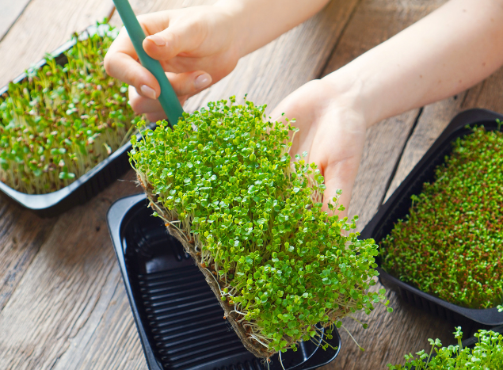
Microverdes na Cozinha — Do cultivo ao prato